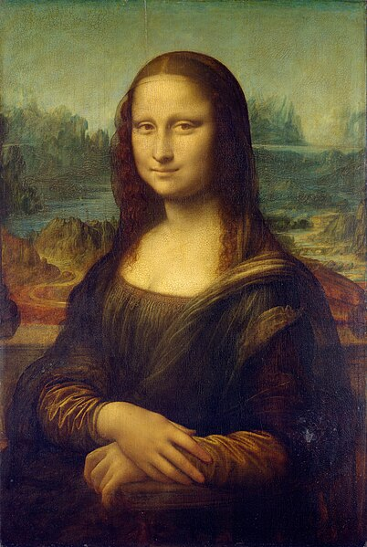
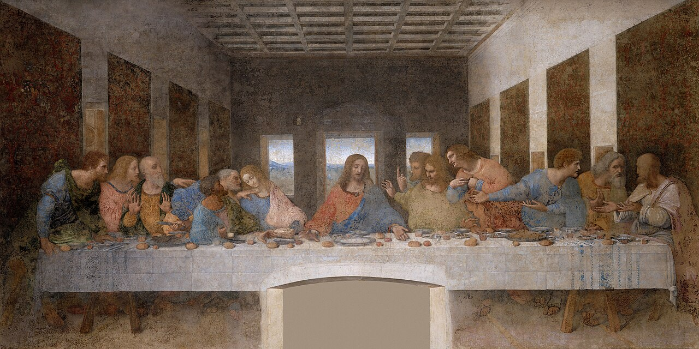
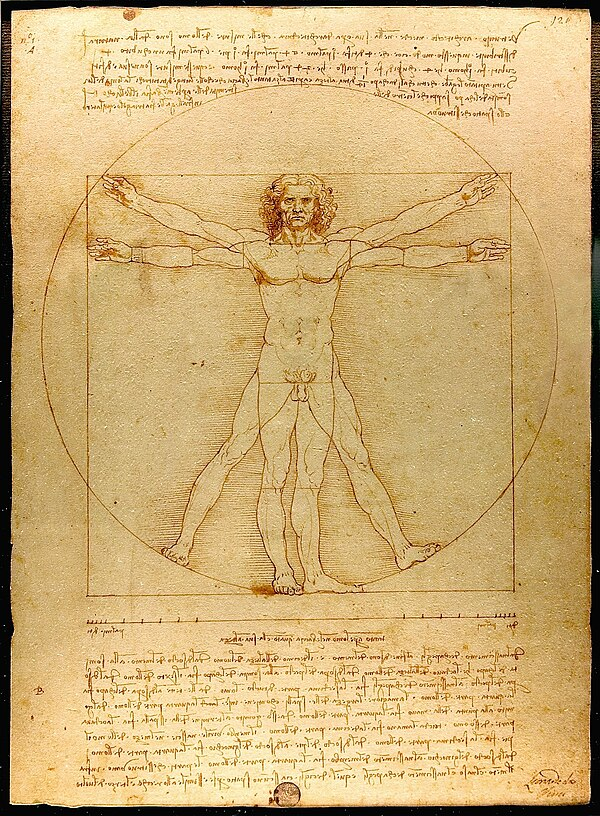
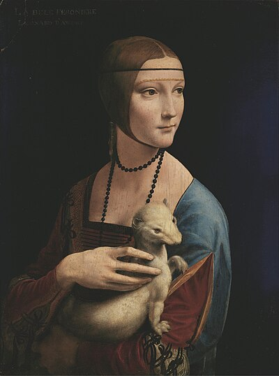
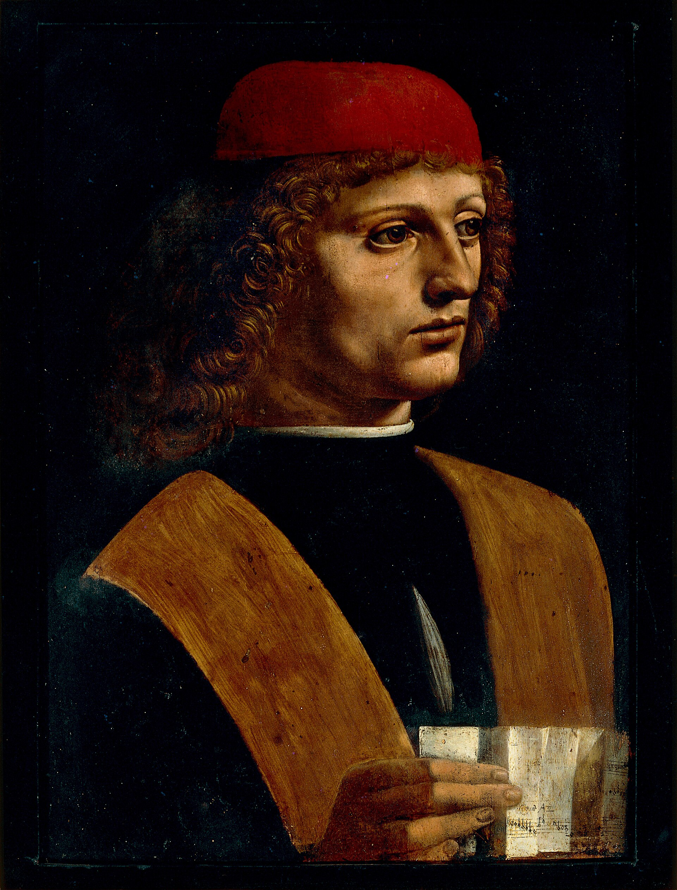
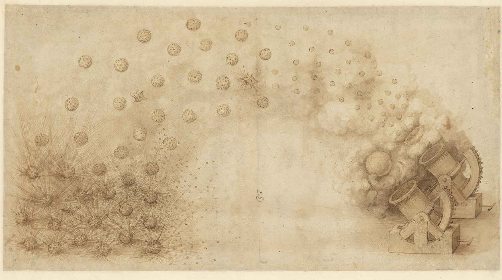
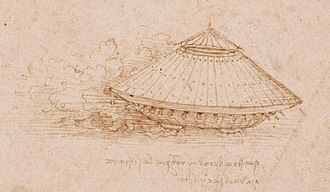
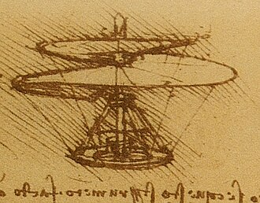
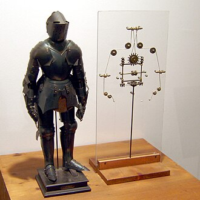
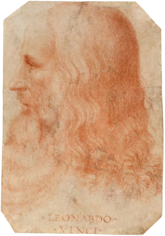

Mona Lisa
Leonardo da Vinci
c. 1503–1519 · Oil on poplar panel
1452 – 1519 · Vinci, Republic of Florence
Artist · Scientist · Visionary
"Learning never exhausts the mind."
"Simplicity is the ultimate sophistication."
"The noblest pleasure is the joy of understanding."
"Art is never finished, only abandoned."
"Where the spirit does not work with the hand, there is no art."

Born on April 15, 1452, in the small Tuscan town of Vinci, Leonardo di ser Piero da Vinci would grow to become perhaps the most diversely talented individual ever to have lived.
The illegitimate son of a Florentine notary and a peasant woman, Leonardo's early years were spent in the rolling hills of Tuscany — a landscape that would forever colour his perception of the natural world. Apprenticed at fourteen to the renowned sculptor and painter Andrea del Verrocchio in Florence, he quickly surpassed his master — Verrocchio reportedly vowed never to paint again after witnessing the young Leonardo's brushwork on a collaborative commission.
What set Leonardo apart was his insatiable curiosity. While his contemporaries mastered one discipline, Leonardo moved fluidly between painting, sculpture, architecture, music, mathematics, engineering, geology, botany, cartography, and anatomy. He dissected over thirty human corpses to understand the body he painted, designed war machines decades ahead of their construction, and sketched flying machines that prefigured modern aircraft by four centuries.
He worked for the Duke of Milan, the Pope, and the King of France — yet he left many of his greatest works unfinished, always lured toward the next question, the next discovery. He died on May 2, 1519, in Amboise, France, reportedly in the arms of King Francis I.
A selection of Leonardo's most celebrated paintings — each a window into a mind that saw the world differently. Click any work to view it in the gallery.

Leonardo da Vinci
c. 1503–1519 · Oil on poplar panel

Leonardo da Vinci
c. 1495–1498 · Tempera on gesso

Leonardo da Vinci
c. 1490 · Pen and ink on paper

Leonardo da Vinci
c. 1489–1490 · Oil on walnut panel

Leonardo da Vinci
c. 1483–1486 · Oil on panel

Leonardo da Vinci
c. 1486–1487 · Oil on walnut panel
Long before the Industrial Revolution, Leonardo conceived machines that would not exist for centuries. His notebooks are full of blueprints that the world was not yet ready to build.

Inspired by the flight of birds and bats, Leonardo designed a human-powered flying machine with wings that flapped mechanically. Though never built in his lifetime, the principles he documented anticipated modern understanding of aerodynamics by over 400 years.

Designed around 1487 for Ludovico Sforza, Leonardo's armoured vehicle featured a circular, shell-like exterior with cannons pointing in all directions. Often cited as a precursor to the modern tank, it was designed to frighten and disorient enemy forces as much as to destroy them.

Leonardo's aerial screw, sketched around 1489, was designed to compress air to obtain flight — the same principle behind the modern helicopter rotor. He imagined it made of linen stiffened with starch, driven by four men running on the platform below. A remarkable leap of imagination.

Around 1495, Leonardo designed what may be the world's first humanoid robot — an armoured knight capable of sitting, standing, raising its visor, and moving its arms. Operated by a system of pulleys and cables, it was likely built for court entertainment and demonstrates his mastery of anatomy and mechanics in one.

Leonardo designed a system of concave mirrors to concentrate sunlight and heat water — an early vision of solar thermal energy. He calculated angles and curvatures with geometric precision, conceiving of renewable energy harvesting centuries before it became an environmental necessity.

Leonardo sketched a pyramid-shaped parachute in 1485 — over 300 years before the first successful parachute jump. He described it as "a tent made of linen" that would allow a man to jump from any height without danger. In 2000, a skydiver successfully used a replica of Leonardo's design to land safely.
Reflections on Leonardo's legacy, his methods, and what his life means for us today.
There is a word we reach for when someone excels across many fields: Renaissance Man. It is not a coincidence that this phrase was coined for an era — and for a man. Leonardo da Vinci did not merely participate in the Renaissance; in many ways, he embodied it.
Imagine finding a locked box containing the private thoughts, sketches, and observations of the greatest mind of the Renaissance. That is, in essence, what Leonardo's notebooks are — and their rediscovery has shaped science, art, and philosophy for five centuries.
Before Leonardo could paint a wave, he studied how water moves. Before he could render a hand, he dissected one. His art was inseparable from his science — and that is precisely what made it immortal.
If Leonardo were alive today, where would you find him? Follow along as we explore his ideas, works, and ongoing legacy across social media.